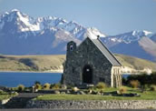

Lake Tekapo
Almost like an oasis when first glimpsed, Lake Tekapo is a long narrow piece of light blue water which runs up and out of sight to New Zealand's spectacular Southern Alps. The lake's light blue colour is from high levels of glacial silt which reflect against the sun.
The alpine village township of Tekapo is situated at the south end of the lake and offers Cafes, Restaurants, Accommodation and glorious views up the lake to the alps beyond. Make sure you visit the Church of the Good Shepherd, a tiny church made of wood and stone. Known as the gateway to the Mackenzie country and the Southern Alps, Lake Tekapo is a popular ski resort in the winter and a busy aquatic holiday destination in the summer. The area offers a wealth of rewarding outdoor activities ranging from a gentle stroll around the Lake to adrenaline-packed mountain biking, water and snow skiing. Lake Tekapo has one of the most purest, clear night skies in the world and because of this, Canterbury University operates a astronomical observatory on top of nearby Mt John. Earth and Sky offer all-year-round tours to view the observatory. Along with the observatory, there is a cafe located at the top of Mt John where you can sit and enjoy the spectacular panoramic alpine views.